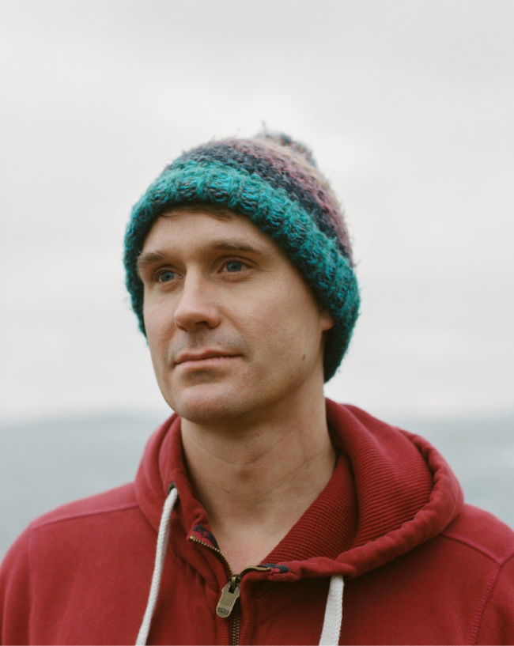

Dentist and sea explorer Andy Kinnear shares his secret spots around Shetland’s wild coastline.
It was on a work excursion five years ago that dentist Andy Kinnear caught the coasteering bug. ‘Around 12 of us went on an organised day exploring the caves and jumping off the cliffs around Nesting,’ says Andy, who moved up to Shetland from Glasgow in 2015, and who now works as a dentist for the health board. ‘It was choppy and overcast, but there was just something magical about it. There was the adrenaline rush of jumping off cliffs, but more than that it was a cleansing experience, like waking up fresh again.’
“There was the adrenaline rush of jumping off cliffs, but more than that it was a cleansing experience, like waking up fresh again.”
A proactive sort, who plays music and organises local acoustic gigs, Andy soon found there were groups of Shetlanders who regularly head out on coasteering adventures. He started organising his own trips, with up to a dozen friends, which might involve cliff-jumping, cave-exploring or just swimming round Shetland’s rugged coast. ‘Putting on a wetsuit and jumping into the cold sea seems a bit mad in other places,’ he says. ‘But here, it’s kind of normalised. And there are so many amazing stretches of coast to explore. It’s become this really sociable thing, where we go on adventures and explore different parts of the islands.’ Here, he shares some of his favourite memories and spots, starting with the place he had that first experience.
Nesting, North Mainland
‘Coasteering really covers anything from jumping off cliffs to just going for a wild swim. But the classic way is to follow a route along the coast, and the coastline at Nesting is one of the best places in Shetland for that. It’s got lots of accessible jumps that aren’t too high, so it’s good for first-timers, and there’s a really interesting cave system to explore. In one, there’s a spot the locals call Seal’s Escape, where you have to lie on your back and swim a few meters through a narrow tunnel to a different cave. Legend has it that a seal was once trapped in the cave by a walrus, but escaped through the passageway.’
The Knab, Lerwick
‘I love this spot, partly because it’s right on the edge of town and yet so few people know what’s down there. In the first summer we were coasteering, a group of us went down in at the east side and found we could swim through a cave from one side of the headland to another. I remember arriving on the other side on this beautiful still evening. The sky was orange, the sea was a shimmering purple, and there were hundreds of shags and cormorants just bobbing around in the sun. It was like we’d found a portal to a different world, right under peoples’ noses.’
Minn Beach, Burra

‘We found this spot by accident a few years ago. We’d been jumping off cliffs at the western end of the beach, when we swam round the corner, and saw a little entrance past a large rock. Inside, we discovered this big cave, almost like an indoor pool, with the sun from outside the cave shimmering on the water and bouncing around. It’s only safe to go in when there’s no swell, but the cave goes deeper and is even bigger at low tide. There’s a sheltered lagoon nearby, and dramatic views west to the island of Foula.’
Sandwick, South Mainland
‘If you walk past the school along the coast at Sandwick, there’s a fence in the middle of a field, which seems out of place, until you walk up to it and see that there’s a drop into a cave below. If you swim round to it, it’s this high narrow cave where you reach a pool under the hole, which acts like a skylight. If you have a torch, there are lots of smaller caves around it, too. I was exploring a dark cave round there, once, and my torch lit up these two red eyes and whiskers. A seal had obviously been stranded, but it was a real shock to find life in this dark place. I got out of there pretty fast.’
Cunningsburgh
‘Just off the car park south of Cunninsburgh is a great place for jumps, with a really deep channel that is protected from the waves. There are lots of different heights to jump from, and it’s easy to get in and out of the water. If you’re jumping from high, it’s best to go feet first with your hands across your chest or by your side. A lot of people put their arms out, and you can get quite a jarring slap.’
Reawick, West Shetland

‘I often go coasteering with my girlfriend, Kristin. But our favourite memory at Reawick, on the west side, wasn’t classic coasteering. We’d gone camping, and failed to get to sleep because of noisy sheep. At midnight, we decided to wade back to the car through shallow water, and realised that we were kicking up this bioluminescent algae, which looked like sparks flying from an angle grinder. We ended up swimming at midnight, surrounded by this strange golden light. The Shetland dialect has a word, ‘mareel’, for the phosphorescence that sailors would spot out at sea. I’m not sure if this was the same thing. But we never expected to find it just walking along the beach like that.’

Toby is an award-winning editor and writer based in London, with a passion for adventure and people-driven storytelling. Breckon in Yell is my favourite beach on the planet.
 Full bio
Full bio